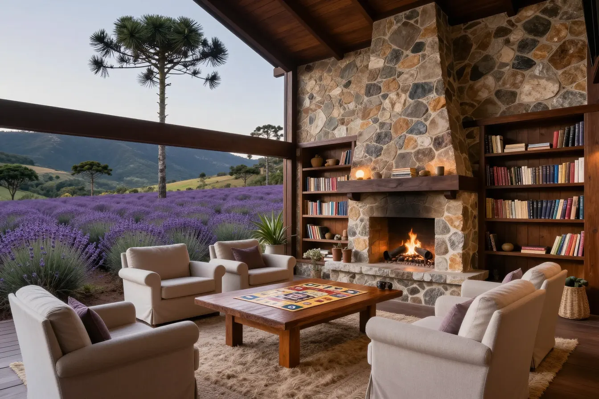

Sobre o Alto Lume
Uma pousada de família num antigo pasto da Serra da Mantiqueira, que virou campo de lavanda e, depois, casa de hóspedes.
A história
Primeiro veio a lavanda
Em 2014 compramos um sítio de gado abandonado, a 1.600 metros de altitude, com uma casa de pedra caindo aos pedaços e um pasto que ninguém queria. O solo era pobre e drenava rápido, o que é ruim para o capim e ótimo para a lavanda. Plantamos os primeiros dois hectares naquele inverno.
A primeira florada, em dezembro de 2015, trouxe gente batendo na porteira para fotografar. Foi assim que a casa de pedra virou a casa principal, reformada com pedra e madeira da própria serra, e que as duas primeiras suítes abriram em 2016. Hoje são três acomodações, quarenta hectares de lavanda e uma equipe de nove pessoas, todas da região.
Como cuidamos da serra
- A água do banho é aquecida por placas solares; o gás só entra em dias nublados.
- A água da chuva é guardada em cisternas e irriga a horta e o campo na seca.
- A lavanda é cultivada sem agrotóxico. As ervas daninhas saem com enxada e com as ovelhas, que pastam entre as fileiras no inverno.
- Oito em cada dez ingredientes do café vêm de produtores a até 30 km daqui.
- Não há plástico descartável nas suítes: sabonete, óleo e xampu vêm em frascos de vidro que reabastecemos.

Quem está aqui
Nove pessoas cuidam da casa: três na cozinha, três no campo, duas na recepção e uma na manutenção. Todas moram na serra, e muitas trabalham com a gente desde a primeira florada. São elas que sabem o horário certo da cachoeira, a feira que vale a pena e o mirante onde ninguém vai.
O que não fazemos
Não recebemos casamentos, festas nem day use. Não temos televisão nas suítes nem som ambiente nas áreas comuns. Não aceitamos mais de doze hóspedes ao mesmo tempo. Cada uma dessas escolhas tira dinheiro do caixa e devolve silêncio para quem vem descansar, e é por isso que elas continuam.
Como chegar
Reserve o seu
silêncio.
Última parada: o portão de madeira, à direita.
@perfil-demonstrativo